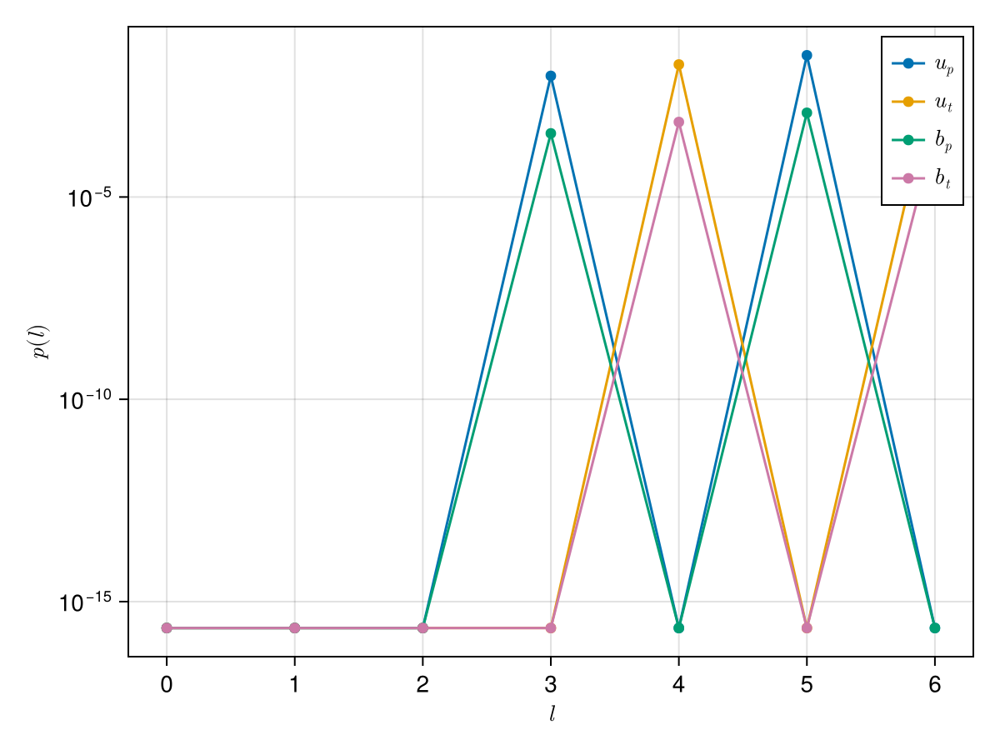
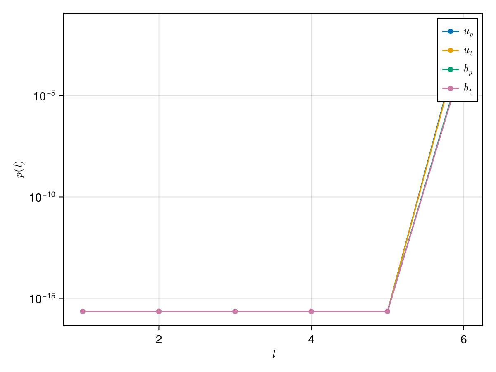

Postprocessing
A non-exhaustive collection of spectral to spatial discretization and postprocessing routines.
Spatial discretization
In the Limace.Discretization submodule, some methods to discretize BasisElement and eigenvectors are provided.
A fully manual discretization routine is given by
Limace.Discretization.discretize — Functiondiscretize(b, r, θ, ϕ, V::Volume=Sphere())Discretize a basis element (or a vector of BasisElement's), b at the given coordinates (r, θ, ϕ) in the volume V.
Example usage
b = BasisElement(Basis{Inviscid,Sphere}, Poloidal, (2,0,1))
Limace.Discretization.discretize(b, 0.9, π/4, 3π/2)discretize(αs::Vector{T}, u::TU, rs, θ, ϕ) where {T<:Number,TU<:Basis}Discretize an eigenvector αs, for a basis u at the given radii rs, latitudes θ, and longitudes ϕ.
To evaluate one BasisElement at a given point $(r,\theta,\phi)$, we can do
using Limace.Discretization: discretize
u = Inviscid(10)
b = BasisElement(u, Poloidal, (2,0,1))
r,θ,ϕ = 0.9, π/4, 3π/2
discretize(b, r,θ,ϕ)3-element StaticArraysCore.SVector{3, ComplexF64} with indices SOneTo(3):
0.05686000202511553 + 0.0im
-0.21626856102305547 + 5.634722292314655e-33im
0.0 + 0.0imThe same also works for a vector of BasisElements.
bs = [BasisElement(u, Poloidal, (2,0,1)), BasisElement(u, Poloidal, (2,0,2))]
discretize(bs, r,θ,ϕ)3-element StaticArraysCore.SVector{3, ComplexF64} with indices SOneTo(3):
0.0648005036787584 + 0.0im
-0.9251770367151191 + 2.410482433718393e-32im
0.0 + 0.0imTo discretize an eigenvector using Limace.Discretization.discretize, consider the following example of the Malkus modes
N = 6
Le = 1e-1
u = Inviscid(N)
b = PerfectlyConducting(N)
bases = [u,b]
B0 = BasisElement(b, Toroidal, (1,0,0), 2sqrt(2pi/15))
forcings = [Limace.Inertial(u), Limace.Inertial(b), Limace.Coriolis(u, 1/Le), Limace.Lorentz(u, b, B0), Limace.InductionB0(b,u,B0)]
problem = LimaceProblem(bases, forcings)
Limace.assemble!(problem)
Limace.solve!(problem)We can chose a single eigenvector x and define some arbitrary spatial grid for r, θ and ϕ:
x = problem.sol.vectors[:,1]
nr,nθ,nϕ = 20,30,40
r = range(0.01,0.99, length=nr)
θ = range(0.01,π-0.01,length=nθ)
ϕ = range(0,2π, length=nϕ)
ur,uθ,uϕ, br, bθ, bϕ = discretize(x, u, b, r, π/2 .- θ, ϕ)
size(ur)(20, 30, 40)For more performant transforms to spatial space, it is recommended to use Limace.Discretization.spectospat, which relies on fast vector spherical harmonic transforms provided through SHTns.jl.
Limace.Discretization.spectospat — Functionspectospat(coeffs::Vector{T}, u::TU, nr::Int, nθ::Int, nϕ::Int; kwargs...) where {TU<:Basis, T<:ComplexF64}Transform eigenvector containing spectral coefficients to three-dimensional vector field at nr x nθ x nϕ grid points. Returns ur,uθ,uϕ, r,θ,ϕ.
spectospat(coeffs::Vector{T}, u::TU, r::Float64, nθ::Int, nϕ::Int; kwargs...) where {TU<:Basis, T<:ComplexF64}Transform eigenvector containing spectral coefficients to two-dimensional vector field at 1 x nθ x nϕ grid points at radius r. Returns ur,uθ,uϕ, θ,ϕ.
spectospat(coeffs::Vector{T}, u::TU, b::TB, nr::Int, nθ::Int, nϕ::Int; kwargs...) where {TU<:Basis, TB<:Basis, T<:ComplexF64}Transform eigenvector containing spectral coefficients to three-dimensional vector fields at nr x nθ x nϕ grid points. Returns ur,uθ,uϕ, br,bθ,bϕ, r,θ,ϕ.
spectospat(coeffs::Vector{T}, u::TU, b::TB, r::Tr, nθ::Int, nϕ::Int; kwargs...) where {TU<:Basis, TB<:Basis, T<:ComplexF64, Tr<:Union{AbstractVector{Float64},Float64}}Transform eigenvector containing spectral coefficients to two-dimensional vector fields at 1 x nθ x nϕ grid points at radius (or radii) r. Returns ur,uθ,uϕ, br,bθ,bϕ, θ,ϕ.
To discretize the eigenvector x on a Gauss-Legendre grid in r and θ, as well as equidistant grid in ϕ, we can call spectospat:
using Limace.Discretization: spectospat
ur,uθ,uϕ, br,bθ,bϕ, r,θ,ϕ = spectospat(x, u, b, nr, nθ, nϕ)Filtering of spectrum
When the background state couples different spectral degrees (may be in radius, spherical harmonic degree or order), the solutions are only truncated approximations of the true solution. This is not the case, for example, for the Inviscid inertial modes or the Malkus modes, which are fully resolved at one truncation degree and are therefore perfectly converged. In all other cases, the computed eigen spectrum will contain some unconverged solutions that need to be filtered out before further analysis.
To check convergence of the solutions, Limace.jl provides the following filters
Limace.Processing.eigenvalue_filter — Functioneigenvalue_filter(evals1, evals2; λtol)
Find all indices of evals1 and evals2 for which findall(y->any(x->isapprox(x,y; rtol=λtol), evals2),evals1). Multithreaded.
Limace.Processing.eigenvector_filter — Functioneigenvector_filter(evecs, u, b; thresh)
Find all indices of eigenvectors evecs for which the ratio of peak energy to energy at truncation degree (max between two last Cartesian degrees) in toroidal/poloidal kinetic/magnetic energy is below thresh.
Limace.Processing.numerical_filter — Functionnumerical_filter(
evecs1,
evecs2,
evals1,
evals2,
u1,
u2,
b1,
b2;
threshc,
λtol,
threads,
epeakratiothresh,
kwargs...
)
Find numerically converged eigensolutions between two resolutions.
After numerical convergence is validated, one can further filter the spectrum using for example a filter that determines the observability of a mode. In the geomagnetic context, observability of a mode may be determined by the peak spherical harmonic degree of the poloidal magnetic field of a mode, which should lie below the maximum resolvable degree of the considered geomagnetic model (e.g. $l\leq 17$ for the secular variation in the CHAOS-7 model).
Limace.Processing.observability_filter — Functionobservability_filter(
evals,
evecs,
u,
b;
ωlow,
ωhigh,
Qlow,
lthresh
)
Find observationally relevant solutions, based on the poloidal magnetic field at the surface. The function takes the arguments evals, evecs, u, and b which are the eigenvalues, eigenvectors, velocity basis, and magnetic field basis, respectively. Keyword arguments ωlow, ωhigh, Qlow, and lthresh are used to filter the eigenvalues based on their frequency, quality factor, and the maximum allowed peak degree in energy.
Energy and spectra
To compute the (kinetic and magnetic) energies of the modes, one can use
Limace.Processing.energies — Functionenergies(problem::LimaceProblem)Compute the energies for all bases problem.bases of all eigenvectors problem.sol.vectors if problem.solved==true.
See the example usage of energies in the Malkus mode example, which shows how to plot a frequency vs. energy-ratio spectrum.
Limace.jl also provides routines to compute the spectrum of an eigenvector as a function of spherical harmonic degree, spherical harmonic order, radial degree, or Cartesian degree.
Limace.Processing.spectrum — Functionspectrum(evecs, u, b; lmn)
Calculate spectrum for all eigenvectors evecs comprised of velocity basis u and magnetic field basis b. Use keyword lmn=1,2,3 to select l=1, m=2 or n=3.
spectrum(problem; lmn)
Calculate spectrum for all eigenvectors problem.sol.vectors, comprised of velocity basis u (problem.bases[1]!) and magnetic field basis b (problem.bases[2]!). Use keyword lmn=1,2,3 to compute spectra in $l$ (lmn=1), $m$ (lmn=2) or in $n$ (lmn=3).
Limace.Processing.spectrum_cartesian — Functionspectrum_cartesian(evecs, u, b)
Compute poloidal/toroidal kinetic/magnetic spectra of evecs as a function of max. Cartesian monomial degree. evecs are the eigenvectors computed using the velocity basis u and magnetic field basis b.
For example, we can compute the spectra of the modes and plot them for one solution like this:
ls, p_up, p_ut, p_bp, p_bt = Limace.Processing.spectrum(problem, lmn=1)
using CairoMakie
let
f = Figure()
ax = Axis(f[1,1], xlabel=L"l", ylabel=L"p(l)", yscale=log10)
for (spec,label) in zip((p_up, p_ut, p_bp, p_bt),(L"u_p", L"u_t", L"b_p", L"b_t"))
scatterlines!(ax, ls, spec[:,1].+eps(); label)
end
axislegend(ax)
f
end
and to do the same as a function of Cartesian polynomial degree
p_up, p_ut, p_bp, p_bt = Limace.Processing.spectrum_cartesian(problem.sol.vectors, problem.bases...)
ns = 1:problem.bases[1].N
let
f = Figure()
ax = Axis(f[1,1], xlabel=L"l", ylabel=L"p(l)", yscale=log10)
for (spec,label) in zip((p_up, p_ut, p_bp, p_bt),(L"u_p", L"u_t", L"b_p", L"b_t"))
scatterlines!(ax, ns, spec[:,1].+eps(); label)
end
axislegend(ax)
f
end
Misc functions
Some convenient functions that are used for other postprocessing routines.
Limace.Processing.epeak_etrunc_cartesian — Functionepeak_etrunc_cartesian(evecs, u, b)
Compute the ratio of peak energy to energy at truncation degree (max between two last Cartesian degrees) in toroidal/poloidal kinetic/magnetic energy. evecs are the eigenvectors computed using the velocity basis u and magnetic field basis b.
Limace.Processing.lmn_n — Functionlmn_n(u, b)
Get all (l,m,n) that correspond to the poloidal and toroidal component of u and b basis at each Cartesian degree ñ ∈ 1:N.